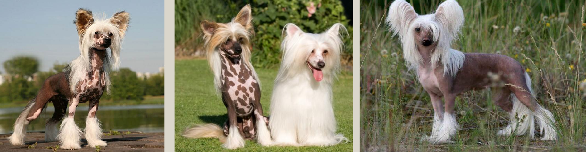

Китайская хохлатая

Китайская хохлатая собака – имиджевая, комнатная порода, представители которой делятся на два типа: бесшерстных особей с полностью голым корпусом и пуховых, заросших длинным шелковистым волосом.
Краткая информация
Название породы: Китайская хохлатая собака
Страна происхождения: Китай
Вес: 2,3-5,5 кг
Рост (высота в холке): кобели 28-33 см, суки 23-30 см
Продолжительность жизни: 12-14 лет